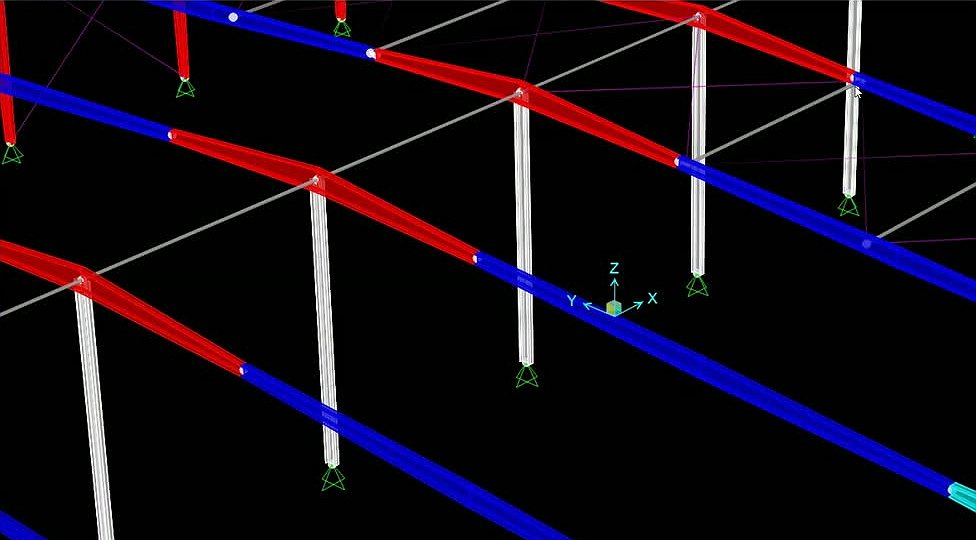

Bài 3.6. Kiểm tra mô hình trước khi chạy Checking the model before analysis
Trước khi gán tải thật, mô hình phải qua một danh mục kiểm tra: đúng vật liệu, tiết diện, liên kết, không lỗi hình học, và cho kết quả DEAD, Modal hợp lý.
- Tạo nhóm đối tượng và chọn nhanh theo tiết diện, tọa độ.
- Áp dụng 8 bước kiểm tra, đặc biệt là so tổng phản lực DEAD với trọng lượng.
1. Tình huống
Mô hình nhà xưởng Hòa Bình (50 × 72 m) đã dựng xong. Thống kê thép khung cho khối lượng 38,5 t; tôn và xà gồ mái tính trung bình 0,15 kN/m². Trước khi gán gió, kỹ sư chạy DEAD và Modal để so tổng phản lực và chu kỳ $T_1$ với ước lượng tay.
2. Nội dung chính
Nhóm và chọn đối tượng
- Assign → Assign to Group: tạo nhóm
COT,KEO,GIANG_MAI,GIANG_COT,THANH_CHONG,KHUNG_DH. Dùng để chọn nhanh, gán Overwrites thiết kế (Chương 12) và xuất bảng. - Select → Properties → Frame Sections: chọn theo tiết diện (video Buổi 02 dùng để đổi màu và kiểm tra).
- Select → Select → Coordinate Specification: chọn theo cao trình (ví dụ mọi nút $Z$ = 0 để gán chân cột).
Danh mục kiểm tra mô hình trước khi chạy
- Đơn vị, vật liệu, tiết diện đúng (Bảng 2.1). Tiết diện thay đổi đúng chiều.
- Chân cột: khớp hay ngàm đúng thiết kế.
- Release: không có thanh nào giải phóng T hai đầu. Khung đầu hồi có giằng.
- Giằng có Tension Only và các trường hợp tải là phi tuyến (hoặc chấp nhận gần đúng).
- Analyze → Check Model: không có nút trùng, thanh trùng, thanh chéo cắt nhau không nút.
- Chạy trường hợp DEAD, xem Deformed Shape: hình dạng hợp lý, không có thanh "bay".
- Chạy Modal: chu kỳ $T_1$ hợp lý (nhà xưởng thép 1 tầng thường 0,5–1,5 s). Mode 1, 2 là dao động ngang và dọc tổng thể.
- Tổng phản lực đứng của DEAD bằng tổng trọng lượng (Base Reactions).
3. Thực hành SAP2000
- Assign → Assign to Group: tạo
COT,KEO,GIANG_MAI,GIANG_COT,THANH_CHONG,KHUNG_DH. - Analyze → Check Model: nút trùng, thanh trùng, thanh cắt nhau không nút.
- Chạy DEAD, MODAL; Display → Show Tables → Base Reactions và Modal Periods.
- View
- Set Display Options (Ctrl+W)
- General Options
- Extrude View
- Apply

4. Lỗi thường gặp
- Bỏ qua Check Model: hai thanh chéo cắt nhau không có nút, tải không truyền như mong muốn.
- Chỉ xem biểu đồ nội lực, không so tổng phản lực với tổng tải.
5. Luyện tập
Chu kỳ dao động riêng $T_1$ hợp lý của nhà xưởng thép một tầng thường nằm trong khoảng nào?
Gợi ý
Xem bước 7 của danh mục kiểm tra.
Lời giải
Nhà xưởng thép 1 tầng: $T_1$ ≈ 0,5–1,5 s; trên 10 s là dấu hiệu mất ổn định.
Khối lượng thép khung theo thống kê là 38,5 t. Tổng phản lực đứng của trường hợp chỉ có trọng lượng bản thân thép phải xấp xỉ bao nhiêu kN? ($g$ = 9,80665 m/s²)
Gợi ý
$W = mg$.
Lời giải
$W = 38{,}5\times9{,}80665 = 377{,}6$ kN.
Trường hợp DEAD gồm thép khung 38,5 t và tôn, xà gồ mái 0,15 kN/m² trên mặt bằng 50 × 72 m. Tổng phản lực đứng Base Reactions phải bằng bao nhiêu kN?
Gợi ý
Cộng trọng lượng thép và tải mái theo diện tích mặt bằng.
Lời giải
Thép: $377{,}6$ kN; mái: $0{,}15\times50\times72 = 540$ kN; tổng $917{,}6$ kN.
- Tạo nhóm theo loại cấu kiện; chọn theo tiết diện, tọa độ.
- Check Model → DEAD (biến dạng, tổng phản lực) → Modal ($T_1$ 0,5–1,5 s).
- Danh mục 8 bước dùng lại ở Phụ lục D trước mỗi lần nộp hồ sơ.